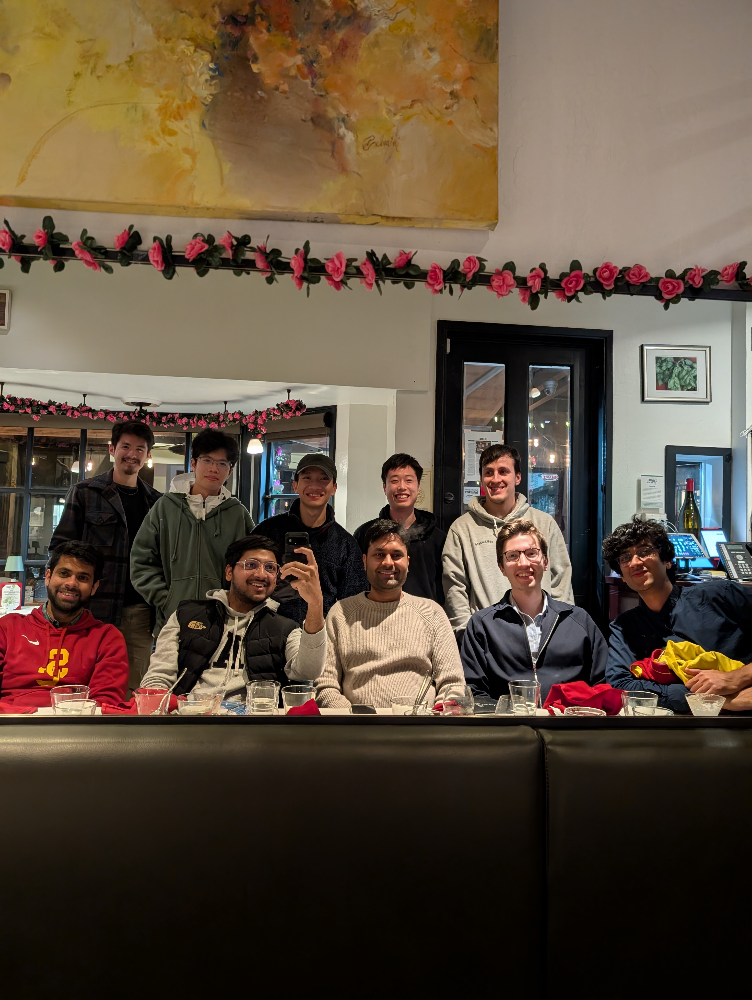
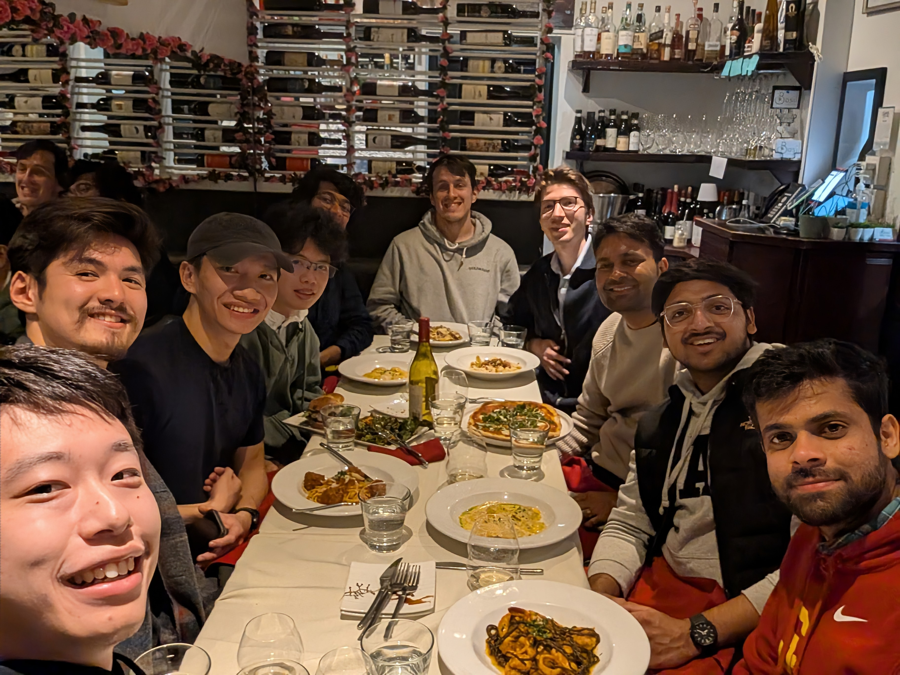
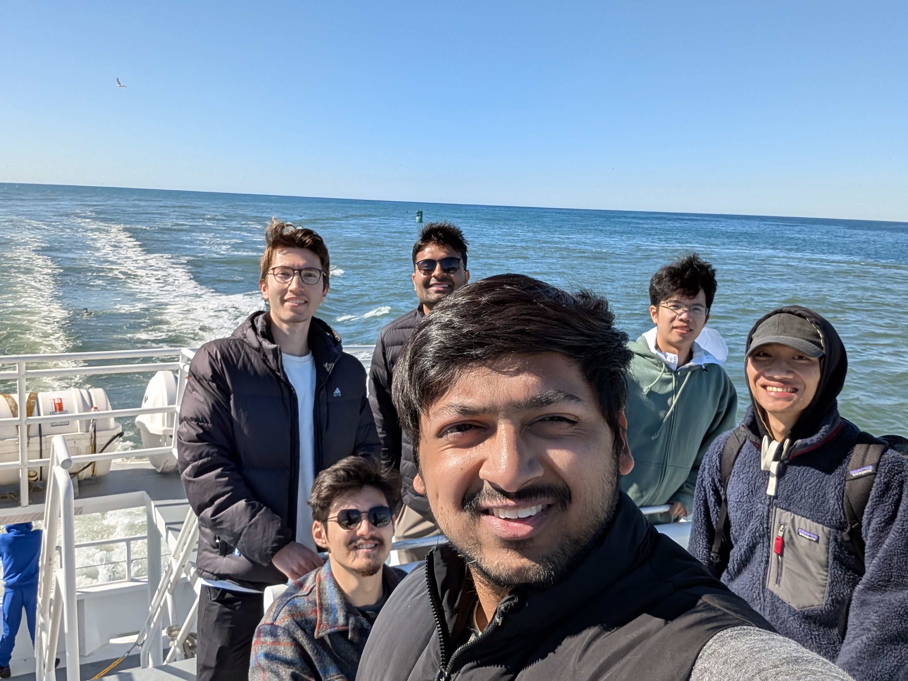
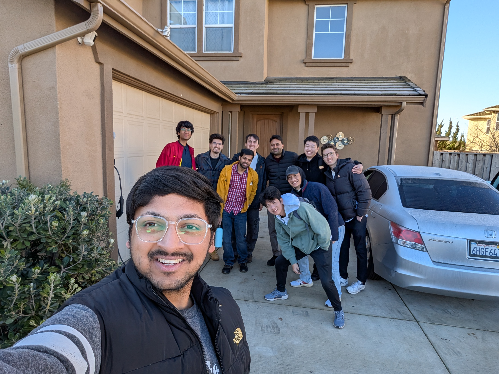

Design for Safety
Methods for safety-aware data collection, policy training, verification, and evaluation that help learning-enabled autonomous systems avoid unsafe behavior before deployment.
Welcome to the Safe and Intelligent Autonomy (SIA) Lab! SIA Lab is part of the Department of Aeronautics and Astronautics at Stanford. Our lab develops principled methods for ensuring the safety of learning-enabled autonomous systems.
Modern robots increasingly rely on machine learning, foundation models, and data-driven decision-making to perceive, plan, and act in complex environments. These capabilities create tremendous opportunities, but also introduce new safety challenges: failures can arise from imperfect models, distribution shift, brittle policies, untested scenarios, and unexpected interactions with the real world.
Our central goal is to build the safety lifecycle for learning-enabled autonomy. We develop theory, algorithms, and computational tools that help autonomous systems discover failures before deployment, intervene safely during deployment, and improve from failures and near-misses after deployment.
The technical backbone of our work is principled safety: reachability analysis, control theory, planning, verification, and learning-based safety representations. We use these foundations to design safer policies, evaluate their limitations, deploy them with runtime safeguards, and continually adapt them to new safety risks.




Methods for safety-aware data collection, policy training, verification, and evaluation that help learning-enabled autonomous systems avoid unsafe behavior before deployment.
Runtime monitors, safety filters, reachability-guided planning, and recovery mechanisms that help autonomous systems respond safely to uncertainty and emerging risks.
Failure analysis, near-miss mining, and safety feedback loops that use deployment experience to improve policies, monitors, simulators, and safety models.
Foundations in reachability, control theory, planning, verification, and learning that provide rigorous tools for reasoning about safety in autonomous systems.
The SIA lab has a new rotating PhD student, Thomas MacLean, a visiting postdoc, Ajay Suresha Sathya, and two new visiting students Yunus Yazoglu from ETH and Akira Hatakeyama from JAXA. Welcome!
Congrats to Umut, Aryaman, and Zeyuan for starting internships with Toyota Research Institute, Honda Research Institute, and Amazon Robotics.
Four papers from SIA Lab were presented at ICRA 2026. Congratulations to Albert, Javier, Kaustav, Ryan, and collaborators.
Congratulations to Dr. Kaustav Chakraborty for becoming the second member to graduate from our lab, and to Dr. Javier Borquez on joining Universidad de Santiago de Chile as faculty.
Hao, Javier, Jason, Zeyuan, and collaborators will present a tutorial on reachability and CBF at CDC 2026.
Congratulations to Sathwik and Aryaman for winning the Qualcomm Innovation Fellowship.
Congratulations to Dr. Somil Bansal for receiving the IEEE Early Career Award in Robotics and Automation from the Robotics and Automation Society.
Colton received the inaugural Stanford Robotics Fellowship to develop reliable monitoring and intervention schemes for VLAs.
Congratulations Hao and Colton for the paper acceptance to RSS 2026.
We started a three-year project with Toyota Research Institute focusing on safety in high-speed driving.
The SIA lab has a new visiting student, Ali Fuat Sahin from EPFL, and an MS student member Joseph Lee from Stanford. Welcome!
Congratulations Le and Umut for your paper acceptance to IEEE Robotics and Automation Letters.
The SIA lab has a new rotating PhD student, Jearyoung Lee. Welcome!
Congratulations Albert for your paper acceptance to L4DC 2026.
New paper on detecting and steering misalignment in LLMs via latent reachability.